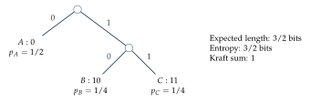

Examine how entropy changes when probability is transferred, and connect the result to counting and coding.
Entropy is a function on probability states
For a probability vector \(p\), Shannon entropy in natural-log units is $\(H(p)=-\sum_i p_i\log p_i.\)$ It measures average surprise. We can evaluate it at the states of a probability lattice and take differences along allowed token transfers. Because this is a finite set of states, the resulting calculus is entirely algebraic and numerical.
Begin with two categories and \(N=4\) tokens. Let $\(H_k=H\left(\frac k4,1-\frac k4\right),\qquad k=0,1,2,3,4.\)\( To four decimals the entropy sequence is \)\(0,\quad0.5623,\quad0.6931,\quad0.5623,\quad0.\)\( Its forward differences are \)\(0.5623,\quad0.1308,\quad-0.1308,\quad-0.5623.\)$ The signs show that entropy rises toward balanced proportions and falls afterward.
Second differences describe discrete concavity
The second differences are $\(\Delta^2H_k=H_{k+2}-2H_{k+1}+H_k.\)\( For the five-state entropy sequence, these three values are all negative. So the first differences decrease as \)k$ increases. This is the discrete expression of concavity: each additional transfer in the same direction provides a smaller entropy gain, then eventually an entropy loss.
More generally, the binary entropy function is concave on \([0,1]\), so sampling it at equally spaced points gives nonpositive second differences. The conclusion can be investigated from finite tables without assuming students know differential calculus.
An entropy-increasing difference equation
A simple deterministic rule on these five states is: move one token toward a neighboring state with larger entropy, and remain in place if neither neighbor improves it. Starting at \(k=0\), the path is $\(0\to1\to2\to2\to\cdots.\)\( Along the trajectory, \)\Delta H_n=H_{k_{n+1}}-H_{k_n}\geq0$. Entropy acts as a monotone quantity for this particular dynamics, because we constructed the update to make it increase.
Do not assume entropy increases under every possible update. Multiplicative selection may lower entropy, and some information channels concentrate probability. Always state the recurrence before making a claim about entropy change.
Accumulated information change
The discrete fundamental theorem now reads $\(\sum_{n=0}^{T-1}\Delta H_n=H(p_T)-H(p_0).\)$ This separates the small changes produced at each step from the total change across an experiment. The original chapter develops code trees and counting formulas that give entropy a second interpretation: how many distinct messages or samples can share the same approximate composition.
Further investigations and applications
A message that was very likely conveys less surprise than a message that was very unlikely. Logarithms turn this idea into an additive numerical measure. The same measure appears in binary code lengths and in the number of ordered samples with a specified composition. These connections give entropy a finite combinatorial interpretation.
Logarithms measure multiplicative scales
For \(a>0\), \(\log_2a\) is the exponent to which \(2\) must be raised to obtain \(a\). Thus \(\log_2 8=3\) and \(\log_2(1/4)=-2\). The natural logarithm \(\ln a\) uses base \(e\). The conversion formula is \(\log_2a=\ln a/\ln2\).
The identities \[\ln(ab)=\ln a+\ln b,\qquad \ln(a^r)=r\ln a\] allow us to express repeated multiplication as addition. The logarithm is increasing, so it preserves inequalities between positive numbers. No method for differentiating logarithms is needed for these uses.
The surprisal of an outcome of probability \(p>0\) is \(-\log_2p\) bits. An event of probability \(1/2\) has one bit of surprisal; an event of probability \(1/8\) has three bits. For independent outcomes with probabilities \(p\) and \(q\), their combined surprisal is the sum because \(-\log_2(pq)=-\log_2p-\log_2q\).
Entropy is average surprisal
For a finite distribution \(p\), its Shannon entropy in bits is \[H_2(p)=-\sum_i p_i\log_2p_i.\] Using natural logarithms gives entropy in nats: \[H(p)=-\sum_i p_i\ln p_i=H_2(p)\ln2.\] A zero-probability outcome is assigned contribution zero to the entropy sum. This convention reflects that the outcome is never observed; it avoids evaluating its individual infinite surprisal inside an average.
Example. Three distributions on the same labels
The distribution \((1,0,0,0)\) has entropy zero bits. The distribution \((1/2,1/4,1/4,0)\) has entropy \(1/2+1/2+1/2=3/2\) bits. The uniform distribution on four labels has entropy \(2\) bits. The label set alone does not determine uncertainty; the probabilities matter.
Entropy is always nonnegative, since \(-\ln p_i\geq0\) for \(0<p_i\leq1\). It is at most \(\ln k\) for a distribution on \(k\) labels. For a positive distribution, weighted arithmetic-geometric mean gives \[\prod_i(1/p_i)^{p_i}\leq\sum_i p_i(1/p_i)=k.\] Taking logarithms proves \(H(p)\leq\ln k\). If some entries vanish, apply the same argument on the support, the set of labels with positive probability. Equality at the \(\ln k\) bound requires all \(k\) probabilities to equal \(1/k\).
Binary trees turn messages into bit strings
A prefix code assigns each label a bit string such that no string is the beginning of another. A binary tree represents the code: a left branch contributes \(0\), a right branch contributes \(1\), and a label occupies a leaf. Decoding proceeds along branches until it reaches a leaf, after which it starts again at the root.
Example. A code matched to three probabilities
For probabilities \((1/2,1/4,1/4)\), assign \(A\mapsto0\), \(B\mapsto10\), \(C\mapsto11\). The codeword lengths are \((1,2,2)\), so their expected length is \((1/2)1+(1/4)2+(1/4)2=3/2\) bits. This equals the entropy because each codeword has length \(-\log_2p_i\).
If three labels are equally probable, the same code has expected length \(5/3\) bits, while the entropy is \(\log_2 3\approx1.5850\) bits. Individual code lengths must be whole numbers, which can prevent a single-symbol code from attaining the entropy exactly. Coding blocks of several symbols permits finer averages.
For a prefix tree with longest code length \(L\), a leaf at depth \(\ell_i\) occupies \(2^{L-\ell_i}\) positions in a complete depth-\(L\) tree. Different leaves occupy disjoint positions. Consequently, \[\sum_i2^{-\ell_i}\leq1.\] This is the Kraft inequality. It is a counting restriction on possible code lengths. Chapter 6 will use relative entropy to show that every such code has expected length at least \(H_2(p)\).

Multiplicity and entropy
Let counts \(n_i\) sum to \(N\), and set \(q_i=n_i/N\). The multiplicity \(\Omega=N!/\prod_i n_i!\) counts ordered samples with empirical distribution \(q\). Under the distribution \(q\) itself, every such ordered sample has probability \[\prod_iq_i^{n_i}=\exp\left(N\sum_iq_i\ln q_i\right)=e^{-NH(q)}.\] Therefore the probability of the entire collection of samples with this composition is \[\Omega e^{-NH(q)}\leq1.\] Taking logarithms gives the exact finite bound \[\frac{\ln\Omega}{N}\leq H(q).\] The left side is a logarithmic count per observation. It is generally smaller than the entropy at finite \(N\). This inequality requires only counting and the fact that an event cannot have probability greater than one.
Example. A balanced sample of size four
For binary counts \((2,2)\), we have \(\Omega=6\). The logarithmic count per observation is \(\log_2 6/4\approx0.6462\) bits, while \(H_2(1/2,1/2)=1\) bit. The probability of exactly two successes under a fair binary model is \(6/16=3/8\). It is not the whole sample space, which explains the gap in the finite bound.
Many different count vectors are possible, so a single composition need not account for most samples. Entropy captures the exponential scale associated with a composition, while the exact multinomial coefficient records its finite multiplicity. We can compare the two numerically without assuming they are equal.
Logarithms also simplify dynamics
For exponential selection, the ratio of two positive coordinates satisfies \[\frac{p_i^+}{p_j^+}=\frac{p_i}{p_j}e^{\eta(f_i-f_j)}.\] Taking natural logarithms yields the exact log-odds increment \[\ln\frac{p_i^+}{p_j^+}-\ln\frac{p_i}{p_j}=\eta(f_i-f_j).\] This is an additive difference equation. If scores are constant, repeated addition solves it. More directly, \[p_{i,t}=\frac{p_{i,0}e^{t\eta f_i}}{\sum_jp_{j,0}e^{t\eta f_j}}.\] When scores depend on the current state, the log-odds increment still holds for each step, but the score differences must be summed along the trajectory.
Example. Accumulating evidence in odds
Suppose two hypotheses have initial odds \(1:4\). A sequence of observations has likelihood ratios \(2\), \(3\), and \(1/2\) in favor of the first hypothesis. Multiplying gives final odds \(3:4\), so its final probability is \(3/7\). Equivalently, the log-odds change by \(\ln2+\ln3-\ln2=\ln3\). Likelihood ratios are multiplicative weights, a connection we will revisit in learning updates.
Entropy of a pair of observations
Let \(X\) and \(Y\) have joint probabilities \(p_{ij}=P(X=i,Y=j)\). Their joint entropy is \(H(X,Y)=-\sum_{i,j}p_{ij}\ln p_{ij}\). The marginal probability of \(X=i\) is \(p_i=\sum_jp_{ij}\). When \(p_i>0\), write \(r_{j\mid i}=p_{ij}/p_i\) for the conditional table of \(Y\) given that value of \(X\).
Using \(p_{ij}=p_i r_{j\mid i}\) and splitting the logarithm gives the chain rule \[H(X,Y)=H(X)+\sum_i p_iH(Y\mid X=i).\] The second term averages the entropy of the conditional tables. Values of \(i\) with probability zero contribute zero. The formula states that describing a pair can be organized as describing the first label and then describing the second label given the first.
If the observations are independent, every conditional table equals the marginal table of \(Y\), so \(H(X,Y)=H(X)+H(Y)\). Applying this repeatedly gives entropy \(NH(p)\) for an independent length-\(N\) sample from \(p\). This is the average surprisal of an ordered sample; it is different from the logarithm of the number of samples in one count class.
Example. Dependence changes joint uncertainty
Let \(X\) be a fair binary label. If \(Y=X\), the two possible pairs are \((0,0)\) and \((1,1)\), each with probability \(1/2\). Joint entropy is one bit: knowing the first label determines the second. If \(Y\) is instead an independent fair label, all four pairs have probability \(1/4\), giving two bits of joint entropy. The marginal tables are the same in the two cases, while their dependence differs.
Coding blocks improves fractional averages
Return to three equally likely labels. A single-label prefix code with lengths \((1,2,2)\) averages \(5/3\) bits per label. For a block of two labels there are nine equally likely ordered pairs. A binary tree can assign seven of these pairs length three and the remaining two length four. Its Kraft sum is \(7/8+2/16=1\), and such a tree can be formed by splitting one leaf of a complete depth-three tree into two children.
The expected length per pair is \((7\cdot3+2\cdot4)/9=29/9\) bits, or \(29/18\approx1.6111\) bits per original label. This is closer to \(\log_23\approx1.5850\) than \(5/3\approx1.6667\). The calculation exhibits how whole-number lengths for blocks allow smaller fractional averages per symbol.
Example. An explicit two-label code
List the nine ordered pairs as \(AA,AB,AC,BA,BB,BC,CA,CB,CC\). Assign the first seven the words \(000,001,010,011,100,101,110\), and assign the last two \(1110,1111\). No word prefixes another. Each pair is equally likely, so the expected length is \(29/9\) bits per pair, as calculated above.
Interpreting a change of labels
Entropy depends on probabilities and is unchanged by merely renaming or permuting labels. Splitting or merging categories is a different operation. Splitting a label into two distinguishable sublabels can increase entropy because there is more to specify. Merging labels can remove that distinction. For example, merging the two probability-\(1/4\) labels in \((1/2,1/4,1/4)\) gives \((1/2,1/2)\) and reduces entropy from \(3/2\) bits to one bit. Later, a stochastic channel will provide a general language for such recording operations.
Exercises
- Evaluate \(\log_2(1/16)\), \(\ln(e^3)\), and \(\log_2 32\).
- Find the surprisal in bits of outcomes with probabilities \(1/2\), \(1/4\), and \(1/32\).
- Compute the entropy in bits of \((1/2,1/8,1/8,1/4)\).
- Explain why a certain outcome contributes zero entropy and why an impossible outcome is assigned zero contribution to the average.
- Construct a prefix code with lengths \((1,2,3,3)\). Find its expected length under the probabilities in Exercise 3, assigning the shortest code to the most probable label.
- Can code lengths \((1,1,2)\) belong to a prefix code? Use the Kraft inequality.
- For uniform probabilities on three labels, compute the expected length of the code \(0,10,11\) and compare it with entropy.
- For binary counts \((3,3)\), compute the multiplicity, its base-two logarithm per observation, and the entropy of the empirical distribution.
- Derive the finite multiplicity bound, carefully explaining why all ordered samples with the same counts have equal probability under \(q\).
- For fixed scores \((0,1,2)\), equal initial proportions, and \(\eta=\ln2\), find the proportions at step three.
- Show that adding a common value to every fixed score leaves all log-odds increments unchanged.
- Give two distributions on four labels with different entropy but the same support. Explain their different average surprisals.
Selected exercise solutions
1. The values are \(-4\), \(3\), and \(5\).
3. The entropy is \(1/2+3/8+3/8+1/2=7/4\) bits.
5. One code is \(0,10,110,111\), assigned in decreasing probability order. The expected length is \((1/2)1+(1/4)2+(1/8)3+(1/8)3=7/4\) bits.
6. No. The Kraft sum is \(1/2+1/2+1/4=5/4>1\).
8. The multiplicity is \(\binom63=20\), so the logarithmic count per observation is \(\log_2 20/6\approx0.7203\) bits. The entropy is one bit.
10. The unnormalized weights are \((1,8,64)\), giving \((1/73,8/73,64/73)\).